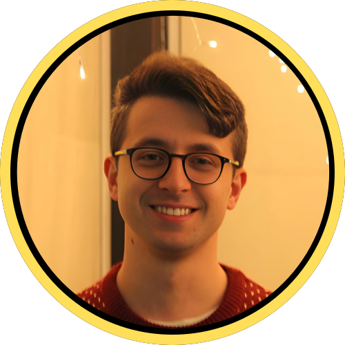

Bio
Curioso di sapere come sono arrivato fin qui?
Quali sono le decisioni che hanno influenzato
maggiormente la mia vita?
E quali sono i miei piani per il futuro? Scorri per scoprirlo.
Punti salienti
- Età: 26
- Nato a: Castelfranco Veneto (TV)
- Occupazione: Studente
- Titoli di studio:
- Diploma in Informatica e Telecomunicazioni
- Laurea Triennale in Lingue, Culture e Società dell'Asia e dell'Africa Mediterranea (Cina)
- Bachelor's Degree in Chinese Language
- Laurea Magistrale in Language and Management to China
- Master in Blockchain Development
- Passioni: Tecnologia, lingue, finanza
- Sogni: Rendere il mondo un posto più trasparente e onesto
Highlights
- Età:
- 26
- Nato a:
- Castelfranco Veneto (TV)
- Occupazione:
- Studente
- Titoli di studio:
- Diploma in Informatica e Telecomunicazioni
- Laurea Triennale in Lingue, Culture e Società dell'Asia e dell'Africa Mediterranea (Cina)
- Bachelor's Degree in Chinese Language
- Laura Magistrale in Language and Management to China
- Master in Blockchain Development
- Passioni:
- Tecnologia, lingue, finanza
- Sogni:
- Rendere il mondo un posto più trasparente e onesto
Caratteristiche principali
- Spirito d'iniziativa
- Curiosità

- Pazienza
- Creatività
- Precisione
- Adattabilità
L'unica costante è il cambiamento
Nasco a Castelfranco Veneto, nel 1998. Da sempre appassionato di tecnologia. Da piccolo mi compravano dei manuali che vendevano con il giornale per imparare ad usare Word ed Excel, e io me li studiavo tutti. Bel passatempo no? Crescendo decido di seguire questa passione iscrivendomi all’istituto tecnico della mia città, indirizzo informatica e telecomunicazioni. A questo punto dirai, finita qua no? Si diploma e va a lavorare in un’azienda di informatica, o al massimo va all’università a continuare gli studi in questo settore.
E INVECE NO.
All’università ci vado si, ma a studiare cinese. Primo plot twist di questo racconto. La decisione l’ho presa all’ultimo anno delle superiori, mi piace dire in seguito a un viaggio a Stoccolma con degli amici. Lì mi sono reso conto che mi sarei perso un’opportunità a non fare l’università. E per giunta ho sentito la necessità di cambiare totalmente ambito di studi. Ed eccomi ad agosto 2017. Venezia, foglio bianco e penna in mano, pronto ad affrontare il test d'ingresso per il corso di laurea triennale in Lingue, Culture e Società dell'Asia e dell'Africa mediterranea. Tante volte mi sono ritrovato a pensare, ma chi me l’ha fatto fare. Ma le risposte arriveranno dopo non preouccuparti. Tutto ha un senso.
Se devo fare le cose le faccio bene, e allora mi candido per il progetto di doppia laurea con l’università Capital Normal University di Pechino. Mi prendono. Ad agosto 2019 saluto l’Italia e mi ritrovo in una delle megalopoli più grandi del mondo. L’obiettivo era di rimanere per due anni e ottenere il doppio diploma di laurea. Il doppio diploma l’ho ottenuto, ma le cose non sono andate come previsto .
A dicembre 2019 faccio le valigie e mi preparo a tornare in Italia per le vacanze invernali. Saluto i ragazzi, “ci vediamo a febbraio” dicevamo.
E INVECE NO.
Atterro in Italia (con 40 di febbre tra l’altro.) Il giorno dopo in Cina viene dichiarato l’inizio della pandemia da Covid-19, e con questo le speranze di ritornare in Cina si sono ridotte a zero. Dopo un primo momento di confusione, alla fine riceviamo istruzioni di continuare il progetto online. Peccato però che online, per chi si trovava in Italia, voleva dire fare lezione di notte. E così è stato, per un anno e mezzo la campanella suonava alle 2.30 di notte, lezioni per tutta la notte, fino alla mattina seguente. Tornassi indietro non lo rifarei, ma l'ho fatto e non mi è neanche pesato troppo, d’altronde non si poteva uscire fuori dalla porta di casa in quel periodo.
Dopo le due lauree decido di completare il percorso con la magistrale economica del dipartimento, un mix di competenze linguistiche e manageriali. Questa volta in presenza, a Venezia. Approfondisco ulteriormente il cinese e mi affaccio al mondo della gestione aziendale, imparo termini come horizontal structure, activities, e call-option.
Una volta laureato ormai è facile no? Andrai in un’azienda che “ha a che fare con la Cina” (come dicevano tutte le persone attorno a me) e girerai il mondo facendo il commerciale e parlando con i business man del dragone.
E INVECE NO.
Tramite l’università trovo un’offerta in una nota agenzia di assicurazioni della mia zona. Faccio un colloquio. Mi prendono. Comincio a farmi le mie prime esperienze nel mondo del lavoro, capisco com’è strutturato un ufficio, come si porta avanti un’iniziativa commerciale, e molto altro. Dopo 6 mesi assumo il ruolo di responsabile di progetto in ambito di consulenza patrimoniale e comincio a creare una proposta omogenea e coerente per i clienti dell’agenzia. Bene direte, ha trovato la sua strada, continuerà in questo settore e vissero tutti felici e contenti.
E INVECE NO. (questo è l’ultimo lo giuro)
Decido di abbandonare quella strada, conscio degli insegnamenti appresi e con la consapevolezza di voler fare la differenza nel mondo del futuro. E quale scelta migliore se non quella di ritornare da dove tutto questo racconto è iniziato. Al mondo digital. Inizio un master con start2impact university nell’ambito blockchain development, curioso di capire come questa nuova tecnologia funzioni e come possa essere applicata nel mondo reale. Ho appena iniziato, ma posso già notare che il master ti prepara non solo a sviluppare delle applicazioni sulla blockchain, ma ti dà un contesto, ti fornisce gli strumenti per muoverti agilmente in questo mondo intricato e complesso.
E questo sito ne è la dimostrazione. È stato creato interamente da me, nell’ambito del corso in HTML & CSS.
E INVECE... no scherzo, la storia finisce qua. (per ora)
Il mio percorso finora è stato variegato, imprevedibile, senza (apparentemente) una logica coerente. Ma è proprio questo il bello. Mi ritrovo ad avere competenze (come quelle linguistiche) che non avrei avuto se avessi seguito fin dall’inizio un percorso statico nel mondo dell’informatica.
Se hai letto fino a qui ti ringrazio, spero che la mia storia possa essere d’ispirazione per altri giovani che non hanno un’idea ben precisa di cosa diventare da grandi. Che poi una cosa l’ho imparata, tanti di questi “grandi” hanno anche tanto da imparare da noi giovani, e non solo il contrario.
Ti saluto, e se vuoi contattarmi per condividere la tua esperienza o per discutere di qualche progetto, scrivimi tramite la sezione “Contattami”.
E casomai non ti rivedessi, buon pomeriggio, buonasera e buonanotte.
Marco Roccon